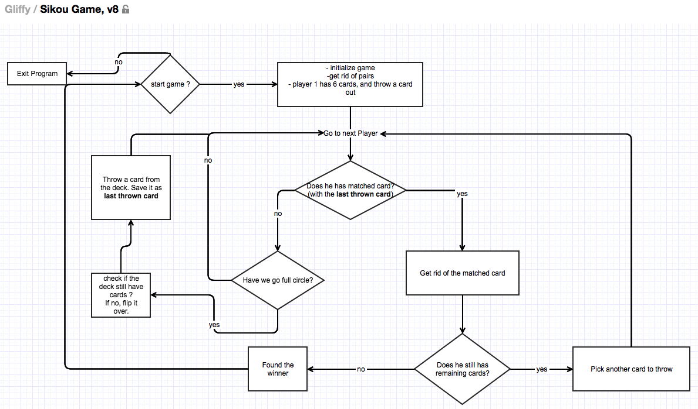

++ Goal of the game
The first person who gets rid of cards in their hands is the Winner.
And collect a poll of money from other players.
1. Determine how many players
2. Each player get 5 cards, and the dealer get 6 cards
3. We keep the remaining deck of cards in the middle of the table
4. Get rids of the pairs in each hand
+ If the dealer has 3 pairs, dealer automatically becomes the winner
+ players can get rid of at most 2 pairs, and have 1 remain because they have odd number of cards.
5. After getting rid of pairs, dealer can rid of ONE card in their hand, and place it in front of her
6. Finding matched card:
+ In a clockwise circle, the next player check if they have the matched card thrown by the dealer
+ If found, they can get rid of the matched card, and throw an additional card away
+ If not found, it is repeated to the next player
6a. If no one has a matched card, one card is removed from the remaining stack, and place in front of
the next player position
7. The game continues until the stacks is empty, in which case, the stack starts over
8. The games then continue from Step 6a.
